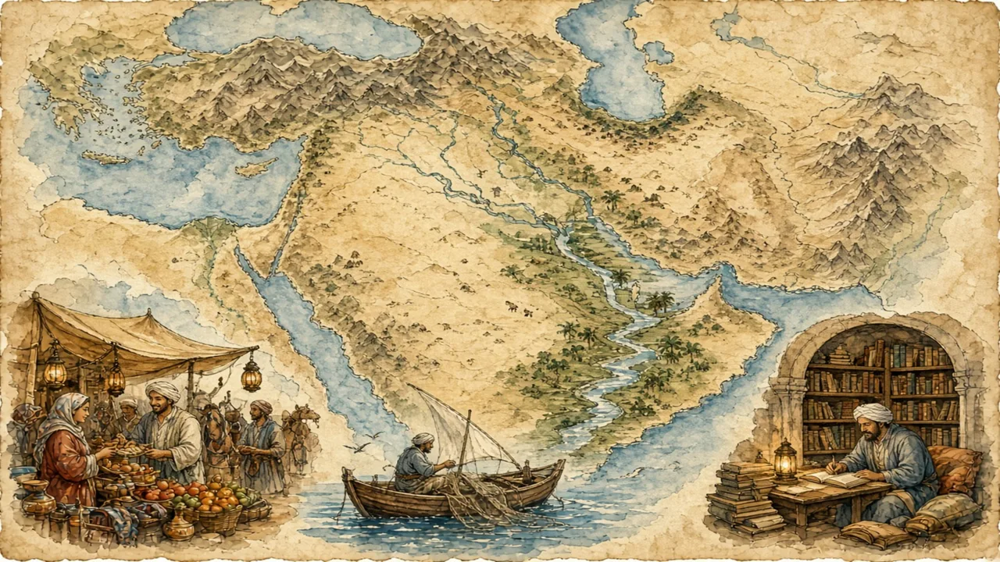

From Moroccan mountains to Gulf skylines and Iranian bazaars: about 500 million people, several major languages and many faiths — and no single culture.
Middle East and North Africa · Overview · Background
🌍 World map · ← Around the World: Middle East and North Africa · 🌱 Easier version (A2) · “Everyone Speaks Arabic” — Or Do They? →

Each new word is hidden in a sentence. Read it aloud and say what you think the bold word means from the rest of the sentence — then reveal it and see how close you were.
Read each part. After it, there's a quick comprehension check (try the questions from memory first), then one thing to discuss.
The region stretches from Morocco on the Atlantic coast to Iran and the Gulf, and includes about twenty countries and roughly 500 million people. The Sahara covers much of North Africa, but the Nile, the Mediterranean coast, mountain ranges and big river valleys are home to most people. Arabic is an official language in more than twenty countries, but Persian, Turkish, Hebrew, Kurdish and the Amazigh languages are widely spoken too. Iranians are Persian, not Arab, and Turks are not Arab either.
1. About how many people live in the region?
2. Are Iranians and Turks Arab?
1. Roughly 500 million.
2. No — Iranians are Persian and Turks are Turkish.
Writing was first used in Mesopotamia, in what is now Iraq, around 5,000 years ago, and some of the first alphabets were developed along the eastern Mediterranean. Cities, laws and farming were also developed there early. In the Middle Ages, scholars in Baghdad, Cairo and Cordoba translated Greek texts and made advances in medicine, mathematics and astronomy. The university of al-Qarawiyyin in Fez, Morocco, was founded in 859 by a woman, Fatima al-Fihri, and is often called the oldest university still working today.
1. Where was writing first used?
2. Who founded the university in Fez?
1. In Mesopotamia, in what is now Iraq.
2. Fatima al-Fihri.
Islam is the majority religion, but the region has been home to Christians, Jews, Druze, Baha'is and others for centuries. In fact, most of the world's Muslims live outside the region, in places such as Indonesia and Pakistan. About two out of three people in the region live in cities. Cairo and Istanbul are among the largest cities in the world, and in Egypt almost everybody lives along the Nile. Only a small share of people still follow a nomadic way of life.
1. Where do most of the world's Muslims live?
2. Where do most people in the region live?
1. Outside the region, for example in Indonesia and Pakistan.
2. In cities.
A stereotype and the reality rarely match. This lesson's grammar gives you the structure to describe the difference.
Complete each sentence about this topic.
1. The first alphabets on the eastern Mediterranean coast. (develop)
2. Arabic in more than twenty countries. (speak)
3. The university in Fez in 859. (found)
1. were developed
2. is spoken
3. was founded
1. Dates around oases for thousands of years. (grow)
2. The label “Middle East” by outsiders, not by the people there. (create)
3. Spices across the region by traders. (carry)
1. have been grown / were grown
2. was created
3. were carried
Hold on to this — you'll need it in the Speak tab.
The name “Middle East” was created from a European and American point of view: it is “middle” and “east” only of somewhere else. People in the region more often describe themselves by country, city, language, family or faith — an Egyptian in Cairo, a Moroccan Amazigh farmer, an Iranian engineer, a Lebanese Christian. Real links exist, such as trade, shared history, food and, for many, the Arabic language, but they connect many cultures rather than make them one.
This is the heart of the lesson — do all of it out loud. The timer is there to keep you going: fill the time with detail rather than escaping it.
Explain how the Middle East and North Africa are connected and how they differ, as if to a friend who pictures one “desert place”. Move through the arc: a huge region → cradle of ideas → many faiths, mostly cities.
Use today's grammar at least three times, and work in at least five key words (crossroads, cradle, dialect, oasis, nomadic, minority, empire, label).
“It is not helpful to talk about a whole region as if it were one place.” Discuss.
Tell a story from your own world — work, family, the news — that connects to this topic. Stuck for an idea? Pick one of these and run with it:
🌍 World map · ← Around the World: Middle East and North Africa · 🌱 Easier version (A2) · “Everyone Speaks Arabic” — Or Do They? →